Taylor series
Exercise 1.1
(a)
| > |
y := ln(sqrt((1+x)/(1-x))); |
(b)
 |
(5) |
| > |
subs(x=0,simplify(diff(y,x$1)))/1!; |
 |
(6) |
| > |
subs(x=0,simplify(diff(y,x$2)))/2!; |
 |
(7) |
| > |
subs(x=0,simplify(diff(y,x$3)))/3!; |
| > |
subs(x=0,simplify(diff(y,x$4)))/4!; |
 |
(9) |
| > |
subs(x=0,simplify(diff(y,x$5)))/5!; |
 |
(10) |
(c)
| > |
a := (n) -> subs(x=0,diff(y,x$n))/n!; |
(d)
(e)
The obvious guess is that  is the sum of
is the sum of 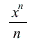
for all odd integers  , or in other words
, or in other words 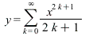
.
This can be checked as follows:
| > |
sum(x^(2*k+1)/(2*k+1),k=0..infinity); |
| > |
simplify(%-y,symbolic); |
_________________________________________________________________________________
Exercise 1.2
(a)
| > |
s := convert(series(sin(x),x=0,12),polynom); |
(b)
| > |
plot([s,sin(x)],x=-8..8,-10..10); |
(c)
| > |
t := (n) -> convert(series(sin(x),x=0,n),polynom); |
| > |
plot([t(14),sin(x)],x=-8..8,-10..10); |
The graph of 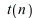
(for  in
in 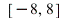
) is visually indistinguishable from that of  when
when 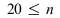
.
| > |
plot([t(20),sin(x)],x=-8..8,-10..10); |
However, the two functions diverge sharply for  outside this range:
outside this range:
| > |
plot([t(20),sin(x)],x=-10..10,-10..10); |
(d)
| > |
plot([sin(x),seq(t(4*n+2),n=0..10)],x=0..20,-2..10); |
| > |
plot([sin(x),seq(t(4*n+4),n=0..10)],x=0..20,-10..2); |
We do not bother with  for odd
for odd  , because
, because 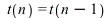
for odd  .
.
(e)
| > |
r := (n) -> convert(series(cos(x),x=0,n),polynom); |
| > |
expand(t(10)^2+r(10)^2); |
Note that 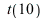
is an approximation to  and
and 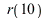
is an approximation to  , so
, so 
should be an approximation to 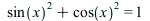
. In fact we see that 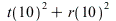
is 1 plus a sum
of terms like 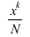
where  is at least
is at least 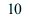
and 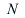
is at least 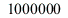
. If  is not too big, then all these extra
is not too big, then all these extra
terms will be very small, so  will indeed be close to
will indeed be close to  . To see this graphically, we plot
. To see this graphically, we plot
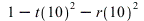
:
| > |
plot(1-t(10)^2-r(10)^2,x=-5..5,-1..1); |
The error is very small for  between
between 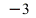
and  , but it grows very big when
, but it grows very big when 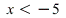
or 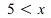
.
_________________________________________________________________________________
Exercise 1.3
| > |
series(x*(1+x)/(1-x)^3,x=0,11); |
Note that the coefficient of 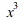
is 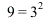
, the coefficient of 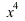
is 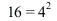
and so on. It should be
clear from this that the series is 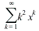
. We can ask Maple to confirm this as follows:
| > |
sum(k^2*x^k,k=1..infinity); |
This is the same as 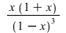
, rearranged slightly.
_________________________________________________________________________________
Exercise 1.4
| > |
series(sin(x),x=Pi/2,12); |
If we call the first series  and the second series
and the second series  , then the relationship is that .
, then the relationship is that .
This is reasonable, because  approximates
approximates  and
and  approximates
approximates  , and
, and
.
_________________________________________________________________________________
Exercise 2.1
| > |
evalf[20](cos(ln(Pi+20))); |
No one seems to have a good explanation for why this is so close to -1. It is probably just a coincidence.
_________________________________________________________________________________
Exercise 2.2
We see that is sent to itself by the function . There is a big theory about points fixed under
iterated application of functions like  , which you can learn in the level 3 Chaos course.
, which you can learn in the level 3 Chaos course.
_________________________________________________________________________________
Exercise 2.3
| > |
a := (1+x)^5-3*(1+x)^4+5*(1+x)^3-3*(1+x)^2+3*(1+x)+3; |
| > |
b := (7*x^2-6*x-x^8)/(x-1)^2; |
It is clear from this that .
_________________________________________________________________________________
Exercise 2.4
| > |
y := ((x^12-1)*(x^2-1)/((x^6-1)*(x^4-1)))^(10); |
| > |
coeff(simplify(y),x^6); |
_________________________________________________________________________________
Exercise 2.5
| > |
solve({
x^2 + y^2 + z^2 = 9,
(x-1)^2 + (y-1)^2 + (z-1)^2 = 2,
4*x^2+y*z = 2*x*y+2*x*z
},{x,y,z}); |
We see that the only integer solution is .
_________________________________________________________________________________
Exercise 2.6
| > |
_EnvAllSolutions := true; |
| > |
solve(sin(theta)^2=3*cos(theta)^2,{theta}); |
| > |
plot(sin(Pi*x)^2-3*cos(Pi*x)^2,x=-2..2); |
The solutions are and for integers  .
.
_________________________________________________________________________________
Exercise 2.7
![Typesetting:-mprintslash([_EnvExplicit := true], [true])](images10/lab_sols10_104.gif) |
(39) |
| > |
sols := solve({x^2-y^2=1,2*x*y=1},{x,y}); |
| > |
evalf(subs(sols[1],[x,y])); |
| > |
evalf(subs(sols[2],[x,y])); |
| > |
evalf(subs(sols[3],[x,y])); |
| > |
evalf(subs(sols[4],[x,y])); |
Only the first of these is a pair of positive real numbers. Thus, the solution we want is as follows:
_________________________________________________________________________________
Exercise 2.8
| > |
fsolve(x=log(x+20),x=3); |
This is related to Exercise 2.1. If the answer there were exactly -1, then the answer here would be  .
.